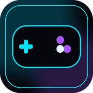

Kalizdy Game
Gaming Lounge · Prado
Estás sin conexión
No pudimos cargar esta pantalla, pero tu sesión sigue viva. El catálogo y las estaciones que ya visitaste quedaron guardados en el dispositivo.
Tip: si estás en el local, conectate al Wi-Fi o pedile la clave al staff. La app vuelve a sincronizarse sola al recuperar internet.
Conexión restablecida. Ya podés reintentar.